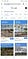

Google Traffic lights 2021

Here is my first article of the year. hope I will continue to write and post every day of this year 2021 and I am hoping all the best for everybody. So the light is green for us to travel this new year and this post is about traffic lights. What if search engines also had traffic lights to guide searchers as our roads have? Do you think that visitors will go where the light is red? Do you think that the traffic dynamic will be the same as it is now?
Hey, maybe this year google will implement gauges about the speed and usability of all web pages and show these gauges with the results they provide. It is up to you to put in the effort needed to make your gauges go green. It is sure that it will never be like it was before. Some websites will lose and others will win.
You have all the tools you need to choose your camp.
The traffic lights are there but you have the power to switch them.
